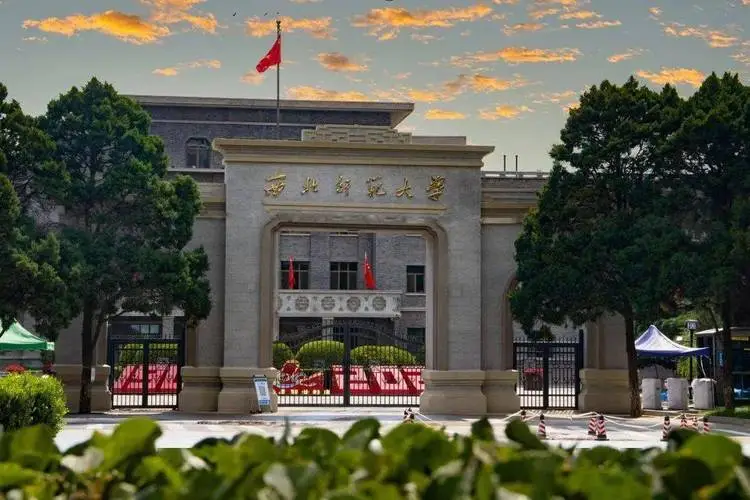
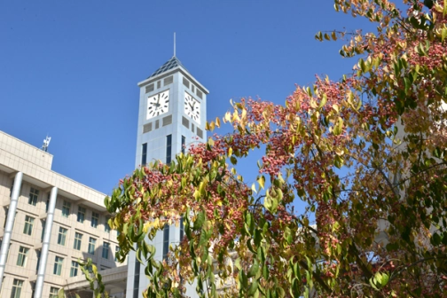

<!DOCTYPE html>
<html>

<head>
    <meta charset="utf-8">
    <title>兰州高校简要介绍</title>
    <meta name="viewport" content="initial-scale=1.0, user-scalable=no">
    <style>
        #map {
            height: 100vh;
        }
    </style>
</head>

<body>
    <div id="map"></div>

    <script src="https://api.map.baidu.com/api?v=2.0&ak=nSxiPohfziUaCuONe4ViUP2N"></script>

    <script>
        var footsteps = [
        {
    lng: 103.859087,lat:36.047985,
    info: '<h3>兰州大学(城关校区)</h3>' +
          '<p style="font-size:14px;">兰州大学（Lanzhou University），简称“兰大”，是中华人民共和国教育部直属的全国重点大学之一，也是国家“双一流”世界一流大学建设高校A类、“985工程”和“211工程”重点建设高校。学校位于甘肃省兰州市，地处黄河之滨，拥有悠久的历史和深厚的文化底蕴。</p>' +
          '<p style="font-size:14px;">学科建设：兰州大学学科门类齐全，涵盖了哲学、经济学、法学、教育学、文学、历史学、理学、工学、农学、医学、管理学、艺术学等12个学科门类。学校在化学、物理学、材料科学、地球科学、植物与动物学、数学、工程学、环境科学与生态学、临床医学、药理学与毒理学等领域具有显著的研究优势和国际影响力。</p>' +
          '<p style="font-size:14px;">校园环境：兰州大学校园环境优美，拥有现代化的教学和科研设施。学校不仅注重学术研究，还非常重视校园文化建设和学生全面发展，致力于培养具有社会责任感和创新精神的优秀人才。</p>' +
         '<p style="font-size:14px;">兰州大学作为西北地区的学术重镇，始终秉承“自强不息，厚德载物”的校训，致力于为国家和世界的科技进步和人才培养做出更大的贡献。</p>' +
           ''

},
          {lng:103.738467,lat:36.09869,
            info: '<h3>西北师范大学</h3>' +
          '<p style="font-size:14px;">西北师范大学（Northwest Normal University，简称NWNU）是一所位于中国甘肃省兰州市的综合性师范大学，是中华人民共和国教育部直属的全国重点大学，也是国家“211工程”重点支持的大学之一。西北师范大学成立于1902年，前身为甘肃省立第一师范学校，历经多次更名和合并，最终于1981年定名为西北师范大学。</p>' +
          '<p style="font-size:14px;">学科建设：西北师范大学学科门类齐全，涵盖了哲学、经济学、法学、教育学、文学、历史学、理学、工学、农学、医学、管理学、艺术学等12个学科门类。学校在教育学、心理学、地理学、汉语言文学、历史学等领域具有较强的学科优势和研究实力。</p>' +
          '<p style="font-size:14px;">师资简介：学校现有教职工2637人，其中正高级职称人员360人，副高级职称人员844人，具有博士学位人员1060人，具有硕士学位人员1011人。有专任教师1765人，其中教授（研究员）335人，副教授（副研究员）687人。有博士生导师227人（其中校外兼职导师33人），硕士生导师2201人（其中校外兼职导师105人，校外实践导师971人）。国家级及部委人才项目入选131人次，省级人才项目入选486人次。学校聘请了300余位国内外知名的专家、学者为特聘或兼职教授。李蒸、黎锦熙、袁敦礼、董守义、李建勋、胡国钰、吕斯百、孔宪武、常书鸿、陈涌、黄胄、彭铎、郭晋稀、李秉德、金宝祥、金少英、南国农等著名教授先后在学校任教。</p>' +
         '<p style="font-size:14px;">西北师范大学在科研方面取得了一系列重要成果，尤其在教育科学、人文社会科学、自然科学等领域有着显著的研究成果和学术影响力。学校承担了多项国家级和省级科研项目，为地方经济社会发展做出了积极贡献。</p>' +
           ''
          },
          {lng:103.725892,lat:36.108491,
            info: '<h3>兰州交通大学</h3>' +
          '<p style="font-size:14px;">兰州交通大学（Lanzhou Jiaotong University），位于甘肃省兰州市，是中国国家铁路集团有限公司、国家铁路局、甘肃省人民政府共建的甘肃省高水平大学，由天津大学、北京交通大学、西南交通大学对口支援，入选中西部高等教育振兴计划、卓越工程师教育培养计划、全国深化创新创业教育改革示范高校、甘肃省属高校国家一流学科突破工程，为“一带一路”高校联盟、中俄交通大学联盟成员。学校前身可追溯至1896年成立的山海关北洋铁路官学堂和1909年成立的北京铁路管理传习所；1958年，唐山铁道学院（现西南交通大学）和北京铁道学院（现北京交通大学）部分系科成建制迁入兰州，组建中国第三所铁路高校兰州铁道学院，隶属中华人民共和国铁道部领导；2000年实行“中央与地方共建，以地方管理为主”的管理体制；2003年更名为兰州交通大学。</p>' +
          '<p style="font-size:14px;">学科建设：兰州交通大学拥有较为完善的学科体系，特别是在交通运输工程、土木工程、机械工程等领域具有较强的学科优势。学校设有多个学院和研究所，涵盖了工程技术、测绘工程、地理信息科学、经济管理、文学法学等多个学科门类。</p>' +
          '<p style="font-size:14px;">截至2024年4月，学校有教职工2269人，其中专任教师1790人，教授333人，副教授670人。有双聘院士2人，近三年，柔性引进高层次人才8人，其中国家杰青4人，中组部海外引进国家高层次人才1人。目前，共有柔性引进国家杰青5人。培育万人计划获得者4人，其中1人入选国家高层次人才特殊支持计划青年拔尖人才。7人入选全球前2%顶尖科学家榜单。有国家百千万人才工程获得者1人，教育部新世纪优秀人才5人，甘肃省领军人才26人，以及“全国五一劳动奖章”获得者、全国优秀教师、全国师德先进个人、全国模范教师、詹天佑铁道科学技术奖获得者、茅以升铁道科学技术奖获得者在内的各类高层次人才340余人；有国家级教学团队1个，全国高校黄大年式教师团队1个。</p>' +
          ''
          },
          {lng: 103.730084,lat:36.105207,
            info: '<h3>甘肃政法大学</h3>' +
          '<p style="font-size:14px;">甘肃政法大学（Gansu University of Political Science and Law），位于甘肃省兰州市，是甘肃省属政法类普通本科院校，由中国政法大学对口支援，入选首批国家卓越法律人才教育培养基地、全国高校实践育人创新创业教育基地、全国政法干警招录体制改革试点院校，为上海合作组织法律大学联盟、全国政法院校“立格联盟”成员。<hr>学校前身为1956年创建的甘肃省政法干部学校；后几经撤并，多次易址，历经甘肃省行政干部学校、北湾五七干校、重建甘肃省政法干部培训学校几个阶段；1984年，成立甘肃政法学院；2019年，更名为甘肃政法大学。<hr>截至2023年12月，学校有安宁西路、兰州新区2个校区，校园占地面积共1066.59亩，校舍建筑面积45.23万平方米，馆藏纸质图书157余万册、电子图书90余万册，各类教学科研仪器设备总值11355余万元；设有15个学院，开设本科专业42个；拥有3个一级学科硕士学术学位授权点，19个二级学科硕士学术学位授权点，9个硕士专业学位授权点；有全日制在校生14029人，其中本科生12029人、硕士研究生2000人。</p>'+
          ''
          },
          {lng: 103.734984,lat:36.058009,
            info: '<h3>兰州理工大学(彭家坪校区)</h3>' +
          '<p style="font-size:14px;">兰州理工大学（Lanzhou University of Technology），位于甘肃省兰州市，是甘肃省人民政府、中华人民共和国教育部、国家国防科技工业局共建的甘肃省高水平大学，由东南大学、北京科技大学、大连理工大学对口支援 ，入选国家中西部高校基础能力建设工程、“111计划”、卓越工程师计划、甘肃省属高校国家一流学科突破工程、国家国防教育特色学校、中国政府奖学金来华留学生接收院校、中国人民解放军后备军官选拔培养基地，为“一带一路”高校联盟成员。<hr>学校前身是1919年创立的甘肃省立工艺学校；1958年，在组建兰州工学院的基础上，将甘肃交通大学并入，定名为甘肃工业大学；1965年，学校划归第一机械工业部，同时将东北重型机械学院和北京机械学院的水力机械、化工机械、石油矿场机械和焊接工艺及设备专业成建制全部迁入，并从湖南大学、合肥工业大学抽调一批教师来校工作；1998年，转制为“中央与地方共建，以地方管理为主”的院校；2003年，更名为兰州理工大学。<hr>截至2024年4月，学校有兰工坪、彭家坪两个校区，占地2430亩，校舍建筑面积127.52万平方米，馆藏图书231万册、电子图书124万册，教学科研仪器设备资产值约6.58亿元；设有19个学院、1个教学研究部，研究生院、温州研究生联合培养基地，开设64个本科招生专业；有6个一级学科博士点，25个一级学科硕士点；有教职工2532人，其中专任教师1620人；在校生31009人，其中本科生22326人、硕士研究生7722人、博士研究生568人、国际学生393人。</p>' +
          ''
          },
          {lng: 103.963344,lat:35.998713,
            info: '<h3>兰州财经大学</h3>' +
          '<p style="font-size:14px;">兰州财经大学（Lanzhou University of Finance and Economics），简称“兰州财大”，位于甘肃省兰州市，中央财经大学、对外经济贸易大学、上海财经大学、中国社会科学院大学对口支援高校，甘肃省高水平大学建设高校，全国深化创新创业教育改革示范高校，入选国家“中西部高校基础能力建设工程”、对口支援西部地区高等学校计划，为“一带一路”高校战略联盟、丝绸之路大学联盟、财经一流学科建设联盟、中国高校创新创业教育联盟、中国-中东欧国家高校联合会成员。<hr>学校始于1952年成立的甘肃省人民政府行政干部学校。1958年升格为甘肃财经学院，隶属甘肃省人民政府领导，实施本科教育。1981年成立兰州商学院，先后隶属中华人民共和国商业部、中华人民共和国国内贸易部领导。1998年实行中央与地方共建、以甘肃为主的管理体制。2015年更名为兰州财经大学。2018年增列为博士学位授予单位。<hr>截至2024年3月，学校有和平、段家滩、东岗三个校区，占地面积1700余亩，校舍建筑面积73万多平方米，教学科研仪器设备总值18547.22万元，馆藏纸质图书246万册、电子图书837万册；设有19个教学单位，开设67个本科专业；拥有1个博士后科研流动站，1个博士学位授权一级学科点，7个硕士学位授权一级学科点，13个硕士专业学位授权点；有教职员工1530人，其中专任教师1198人；全日制在校本科生2.2万余人，博硕士研究生3100余人，继续教育学员1.2万余人。</p>' +
          ''
          },
          {lng:103.944434,lat:35.969,
            info: '<h3>甘肃中医药大学</h3>' +
          '<p style="font-size:14px;">甘肃中医药大学（Gansu University Of Chinese Medicine），位于甘肃省兰州市，是甘肃省人民政府与国家中医药管理局共建高校，由上海中医药大学对口支援，入选“卓越医生（中医）教育培养计划改革试点”高校、中医学专业“5+3”一体化招生院校、“中国政府奖学金”来华留学生培养院校，为国家基本药物所需中药材种子种苗繁育基地建设甘肃省牵头指导单位、甘肃省道地中药材标准制定工作牵头单位、科技部“中医药防治慢性病示范型国际科技合作基地”、甘肃省中医药标准化技术委员会秘书处常设单位、世界中医药学会联合会敦煌医学研究及文化传承专业委员会牵头单位。<hr>学校前身为1978年创办的甘肃中医学院；1990年，增列为硕士学位授予单位；2013年，增列为博士学位授予单位；2014年，定西师范高等专科学校整体并入学校；2015年，更名为甘肃中医药大学。<hr>截至2024年3月，学校有和平、五里铺、定西、甘南4个校区，总占地面积2041.61亩，馆藏纸质图书98余万册，电子图书249.5万册；设有16个教学机构，开设34个本科专业；有2个博士后科研流动站、3个一级学科博士学位授权点、5个一级学科硕士学位授权点、6个硕士专业学位授权类别；有教职工1118人，专任教师926人；全日制在校生19768人，其中本科生15400人、硕士研究生3459人、博士研究生229人、留学生97人。</p>' +
          ''
          },
          {lng:103.699825,lat:36.088801,
            info: '<h3>甘肃农业大学</h3>' +
          '<p style="font-size:14px;">甘肃农业大学（Gansu Agricultural University），位于甘肃省兰州市，是中华人民共和国农业农村部和甘肃省人民政府共建的甘肃省高水平大学，由中国农业大学对口支援，入选国家中西部高校基础能力建设工程、卓越农林人才教育培养计划、国家建设高水平大学公派研究生项目、国家特色重点学科项目、甘肃省属高校国家一流学科突破工程，为“一带一路”高校联盟、中国-中东欧国家高校联合会、中国农业院校丝绸之路农业教育科技创新联盟成员。<hr>学校前身是1946年10月创建的国立兽医学院；1950年，更名为西北兽医学院；1951年，更名为西北畜牧兽医学院；1958年，与筹建中的甘肃农学院合并成立甘肃农业大学；2012年，中华人民共和国农业部和甘肃省人民政府共建甘肃农业大学。学校1953年开始招收研究生，是全国第一批学士学位授予单位、硕士学位授予单位，第二批博士学位授予单位。<hr>截至2024年4月，学校占地158万平方米，建筑面积70万平方米；设有23个学院（教学部），开设68个本科专业；拥有5个博士后科研流动站，8个一级学科博士学位授权点，1个交叉学科博士学位授权点，1个博士专业学位授权类别，19个一级学科硕士学位授权点，11个硕士专业学位授权类别；有教职工1575人，普通本科生17636人，硕士研究生3872人，博士研究生659人。</p>' +
          ''
          },
          {lng: 103.819269,lat:36.045672,
            info: '<h3>西北民族大学（校本部）</h3>' +
          '<p style="font-size:14px;">西北民族大学（Northwest Minzu University）位于甘肃省兰州市，简称“西北民大”（XBMU），是直属中华人民共和国国家民族事务委员会的全日制普通高等本科院校，由国家民族事务委员会、教育部、中国科学院、甘肃省人民政府共建，是中华人民共和国成立后创建的第一所民族高等院校，由四川大学对口支援，是国家首批卓越农林人才教育培养计划改革试点高校、甘肃省高水平大学建设单位、少数民族骨干计划，“一带一路”高校联盟创始成员单位、CDIO工程教育联盟成员单位、联合国教科文组织中国创业教育联盟理事单位，具有推荐优秀应届本科毕业生免试攻读硕士研究生资格。<hr>学校始于1941年中国共产党在延安创建的延安民族学院，后延安民族学院并入延安大学；1949年，延安大学更名为西北人民革命大学；1950年1月，改建为西北人民革命大学兰州分校第三部；1950年8月，正式成立西北民族学院；2003年4月，更名为西北民族大学。<hr>截至2024年2月，学校设有西北新村校区和榆中校区2个校区，拥有附属医院、附属中学、附属小学、附属幼儿园，校园总面积1776亩，总建筑面积78万平方米，图书馆藏图书文献等416万余册/件（含电子图书），教学科研仪器设备总值5亿余元；下设教学科研单位25个，开设本科专业73个；拥有博士后科研流动站1个，博士学位授权一级学科2个，博士学位授权二级学科3个，硕士学位授权一级学科15个，硕士学位授权二级学科8个，硕士学位授权交叉学科2个，硕士专业学位类别17个；有师生3万余人。</p>' +
          ''
          },
          {lng: 103.694311,lat:36.094838,
            info: '<h3>兰州城市学院（校本部）</h3>' +
          '<p style="font-size:14px;">兰州城市学院（Lanzhou City University），位于甘肃省兰州市，是甘肃省属全日制普通本科院校，由华东师范大学对口支援 ，入选首批甘肃省应用技术大学试点高校，为“一带一路”高校联盟、全国石油高校协作会议、甘肃高校教师教育联盟、安宁五所高校战略联盟、大湾区产教联盟、黄河流域大学联盟、中国教育国际交流协会、亚信成员国领先大学伙伴关系网络成员。<hr>学院前身为始建于1958年的兰州师范高等专科学校和新西兰友人路易·艾黎于1942年创办的培黎石油学校；2003年，培黎石油学校并入兰州师范高等专科学校；2006年，兰州师范高等专科学校更名为兰州城市学院。<hr>截至2024年3月，学校有校本部、培黎、城关三个校区，占地面积43.37万平方米，校舍建筑面积43.4万平方米，固定资产总值10.87亿元。学校设有二级教学单位16个；开设本科专业56个；有教职工1137人，全日制在校本科生1.6万余人。</p>' +
          ''
          },
          
          {lng:103.945375,lat:36.024472,
            info: '<h3>兰州资源环境职业技术学院</h3>' +
          '<p style="font-size:14px;">兰州资源环境职业技术大学（Lanzhou University of resources and environment），位于甘肃省兰州市，由甘肃省人民政府、中华人民共和国应急管理部、中国气象局共建，是国家骨干高职院校、国家优质专科高等职业院校、中国特色高水平高职学校和专业建设计划建设单位、全国11所定向培养士官试点院校、全国现代学徒制试点单位、甘肃省“双一流”大学项目建设院校、甘肃省优质高职院校。<hr>学校前身是始建于1951年隶属中国气象局的国家重点中专兰州气象学校、始建于1984年隶属甘肃省煤炭工业局的甘肃煤炭职工大学；2004年，兰州气象学校和甘肃煤炭职工大学合并改建为兰州资源环境职业技术学院；2021年，甘肃省水利水电学校整体并入兰州资源环境职业技术学院；2021年5月，整合兰州财经大学长青学院、兰州资源环境职业技术学院办学资源设置省属公办本科层次兰州资源环境职业技术大学。<hr>截至2024年1月，学校有4个校区，占地面积2307亩，建筑面积43.37万平方米，教学科研仪器设备总值30254万元，图书馆藏书143万册；设有15个二级学院，开办27个职业本科专业；有教职工1117人，全日制在校生21000余人。</p>' +
          ''
          },
          {lng:103.96625,lat:36.004226,
            info: '<h3>兰州工商学院</h3>' +
          '<p style="font-size:14px;">兰州工商学院（Lanzhou Technology and Business College）是经教育部批准独立设置的省管民办普通本科学校。<hr>学校前身为2000年3月经原甘肃省教委批准成立的兰州商学院陇桥学院；2016年，经甘肃省教育厅批准，更名为兰州财经大学陇桥学院；2021年，经教育部批准，转设为省管民办普通本科学校兰州工商学院。<hr>据2024年6月学校官网显示，学校本部位于兰州市和平开发区，校园占地1320.22亩（两个校区）；校舍总建筑面积26.86万平方米；设有10个学院2个教学部，有本科专业29个；有全日制在校本科生12716人，教师780人。<hr>据2024年6月学校官网显示，学校位于兰州市和平开发区，校园总占地面积1420.2亩；馆藏图书160万余册，设有9个学院和2个教学部，有32个本科专业；有教师743人，全日制在校本科生15463人。</p>' +
          ''
          },
          {lng: 103.961789,lat:36.01322,
            info: '<h3>兰州博文科技学院</h3>' +
          '<p style="font-size:14px;">兰州博文科技学院（Lanzhou Bowen College of Science and Technology），位于甘肃省兰州市，是教育部批准设立的民办全日制普通本科高校。<hr>学校前身是创办于2002年的兰州交通大学博文学院，2004年经教育部审批确认为独立学院，2021年经教育部批准转设为兰州博文科技学院。<hr>截至2024年7月，学校占地面积1725.3亩，其中和平校区532.3亩，兰州新区校区1193亩，新区校区正在规划建设中。图书馆现有馆藏图书110万册，电子图书56万册；设有11个二级学院，44个本科专业；现有教职工862人，专任教师764人。</p>' +
          ''
          },
          {lng: 103.832704,lat:36.098002,
            info: '<h3>甘肃警察职业学院</h3>' +
          '<p style="font-size:14px;">甘肃警察学院位于中国甘肃省兰州市，隶属甘肃省公安厅领导和管理，省教育厅对学院的办学活动实施领导、指导和监督。<hr>学院的前身是创建于1949年9月的甘肃人民公安学校，1978年恢复办学后称甘肃省公安学校，1980年更名为甘肃省人民警察学校，2001年7月经甘肃省人民政府批准升格为甘肃警察职业学院。2024年5月升格为本科层次的公安高等院校甘肃警察学院。<hr>据2024年6月学校官网显示，学院有兰州市城关区左家湾和皋兰县魏家庄两个校区，占地面积近2000亩，校舍建筑面积20多万平方米；教学仪器设备总值7270.57万元。馆藏图书65.8万册，电子图书23万册；开设8个教学训练机构，学院开设15个公安类专业（其中本科公安专业5个，专科公安专业10个）和相关的其他普通专科专业；有专任教师366人，有全日制在校学生6470余人。</p>' +
          ''
          },
          {lng: 103.897785,lat:36.065779,
            info: '<h3>兰州文理学院</h3>' +
          '<p style="font-size:14px;">兰州文理学院（Lanzhou University of Arts and Science），位于甘肃省兰州市，是经教育部批准设立的省属公办普通本科院校，是甘肃省首批向应用型转型发展试点高校，甘肃省硕士学位授予立项建设单位，中国传媒大学、北京理工大学对口支援院校，“一带一路”高校联盟创始成员，文旅部非遗传承人群研培基地、科技部国家级众创空间、中国科协学风传承示范基地，新时代甘肃省高校党建示范院校，甘肃省新时代语言文字示范校。<hr>学校始建于1950年，由甘肃教育学院、甘肃联合大学、甘肃省艺术学校、甘肃省电影学校等先后合并而成。<hr>截至2024年5月，学校设有14个二级学院，开设42个本科专业；有教职工874人，其中专任教师651人，在校生近1.2万人。</p>' +
          ''
          },
          {lng: 103.755638,lat:36.557428,
            info: '<h3>兰州信息科技学院</h3>' +
          '<p style="font-size:14px;">兰州信息科技学院（Lanzhou University of Information Science and Technology），是教育部批准设立的民办全日制普通本科高校，入选首批甘肃省应用技术大学转型发展试点院校。<hr>学校前身为成立于2002年的兰州理工大学技术工程学院，2004年被教育部确认为独立学院，2021年经教育部批准转设为兰州信息科技学院。<hr>据2024年5月学校官网显示，学校占地面积1026亩，设有8个二级学院及工程训练中心，开设43个本科专业；有教师800余名；有全日制在校生16700余人。</p>' +
          ''
          }
    
];


        // Initialize Baidu Map
var map = new BMap.Map("map");
var point = new BMap.Point(103.8394, 36.0632); // 兰州市中心经纬度
map.centerAndZoom(point, 11);

// Add markers for each footprint with info windows
for (var i = 0; i < footsteps.length; i++) {
    var pt = new BMap.Point(footsteps[i].lng, footsteps[i].lat);
    var marker = new BMap.Marker(pt);
    map.addOverlay(marker);

    // Create info window for each marker
    var infoWindow = new BMap.InfoWindow(footsteps[i].info, {
        title: '高校简介'
    });

    // Use closure to pass correct infoWindow into event listener
    (function (infoWin, marker) {
        marker.addEventListener('click', function () {
            this.openInfoWindow(infoWin);
        });
    })(infoWindow, marker);
}

// Add navigation control
map.addControl(new BMap.NavigationControl());

// Add scale control
map.addControl(new BMap.ScaleControl());

// Add overview map control
map.addControl(new BMap.OverviewMapControl());

// Add map type control
map.addControl(new BMap.MapTypeControl({ mapTypes: [BMAP_NORMAL_MAP, BMAP_SATELLITE_MAP] }));

// Enable scroll wheel zoom
map.enableScrollWheelZoom(true);
    </script>
</body>

</html>
